BJM has plotting functions for each stage of an analysis: looking at
the data before modeling, checking the fitted sub-models, showing one
patient’s predictions, and evaluating how good the predictions are. This
article walks through all of them on the pbc3 data. Every
function returns a ggplot object, so you can add layers,
change themes or labels with +, and save it with
ggplot2::ggsave().
| Stage | Function | Shows |
|---|---|---|
| Data | spaghettiPlot() |
each patient’s biomarker trajectory |
| Data | cmtPlot() |
mean trajectory of patients with the same event time |
| Data | cifPlot() |
cumulative incidence of each event type |
| Fitted models | plot(survival_fit_all) |
hazard and odds ratios, baseline hazard |
| Fitted models | plot(long_fit_all) |
residual and random-effect diagnostics |
| One patient | predictPlot() |
risk and biomarker as the horizon grows |
| One patient | riskPlot() |
risk as the landmark time moves |
| One patient | plot(predictLongitudinal(...)) |
predicted biomarker distribution |
| Simulated futures | plot(simulateTrajectory(...)) |
simulated trajectories, or event incidence |
| Performance | performancePlot() |
AUC and Brier score across landmarks |
| Performance | calibrationPlot() |
predicted versus observed risk |
In pbc3, year is the time of each visit,
years the follow-up time, status3 is 1 for
death or transplantation, and status5 codes the event type:
0 censored, 1 death, 2 transplantation.
Exploring the data
Individual trajectories: spaghettiPlot()
One line per patient, colored here by whether the patient died
(status2 = 1), with a smoothed mean trajectory per
group.
spaghettiPlot(pbc3, bio_variable = "serBilir", time_variable = "year",
event_type_variable = "status2")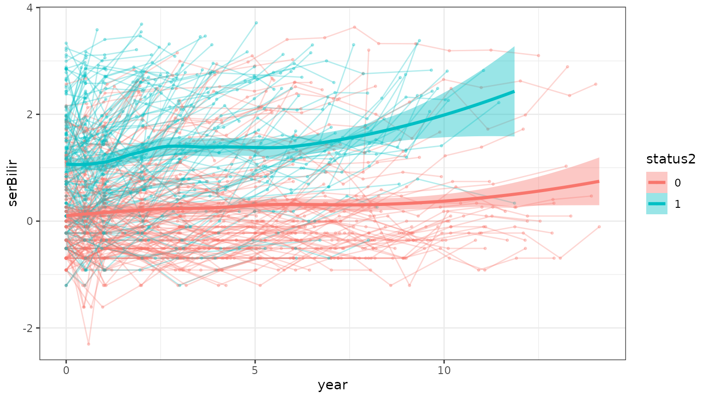
With align = "event", the horizontal axis becomes the
time remaining until each patient’s event or censoring time, so 0 is the
event and every patient is lined up at their own end of follow-up. This
is how the backward joint model looks at a biomarker: as a function of
time to the event. Here bilirubin rises steeply in the years before
death.
spaghettiPlot(pbc3, bio_variable = "serBilir", time_variable = "year",
survival_variable = "years", event_type_variable = "status2",
align = "event")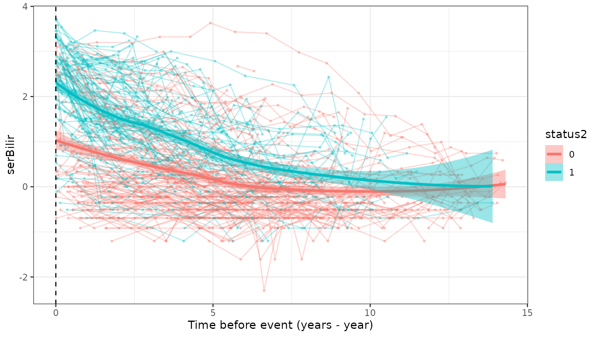
With many patients, n_subjects draws a random
subset.
Conditional mean trajectories: cmtPlot()
The mean biomarker trajectory of the patients whose event happened
around the same time (condi_time2event), here separately
for the two competing event types.
cmtPlot(pbc3[!is.na(pbc3$status4), ], condi_time2event = 5,
event_type_variable = "status4", event_type = c("0", "1"),
bio_variable = "albumin", time_variable = "year",
survival_variable = "years", interval_time = 1 / 4)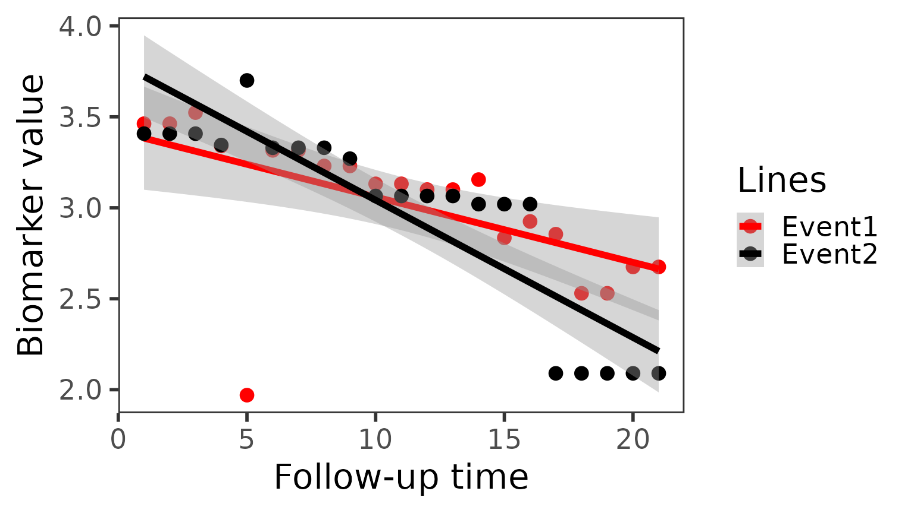
Cumulative incidence: cifPlot()
The Aalen–Johansen cumulative incidence of each event type, which treats the competing event correctly rather than as censoring. The data may be in long format; only each patient’s first row is used.
cifPlot(pbc3, survival_variable = "years", event_type_variable = "status5",
event_labels = c("1" = "Death", "2" = "Transplant"))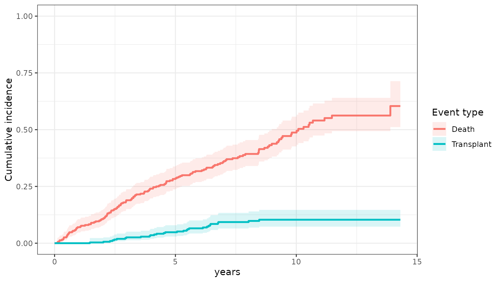
group_variable draws one curve per group, e.g. treatment
arm:
cifPlot(pbc3, survival_variable = "years", event_type_variable = "status2",
group_variable = "drug")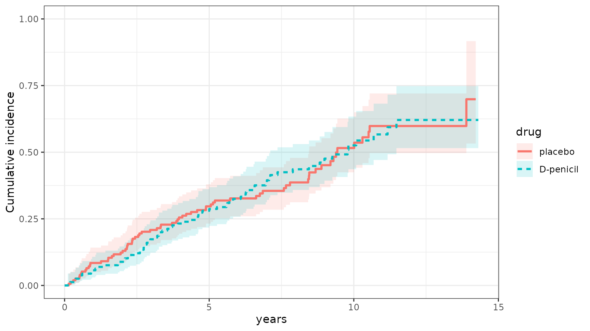
Checking the fitted sub-models
We fit the sub-models as in vignette("BJM-intro"): a Cox
model for the overall event with a logistic model for the event type,
and two biomarkers.
survival_fit_all <- survivalSub(
pbc3[!duplicated(pbc3$id), ],
form_marginal_surv = Surv(years, status3) ~ age + sex,
form_conditional_cr = status4 ~ years + age + sex
)
long_sub_fixed <- list(
"serBilir" = serBilir ~ year + age + sex + years + years * year,
"albumin" = albumin ~ year + age + sex + years + years * year
)
long_sub_random <- list("serBilir" = ~ year | id, "albumin" = ~ year | id)
long_fit_all <- longitudinalSub(pbc3[pbc3$status3 == 1, ], long_sub_fixed, long_sub_random)
trans <- survivalTrans(c(1, 3, 5, 7))Survival sub-model: plot(survival_fit_all)
A forest plot of the hazard ratios of the survival model and, with
competing risks, the odds ratios of the event-type model (here the odds
of transplantation, status4 = 1, versus death).
plot(survival_fit_all)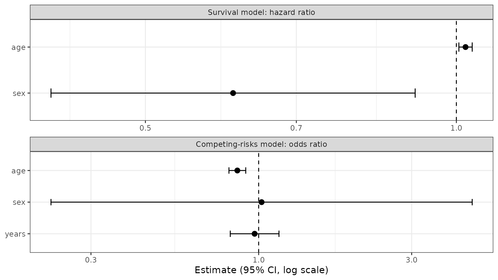
which = "basehaz" shows the Cox model’s baseline
cumulative hazard.
plot(survival_fit_all, which = "basehaz")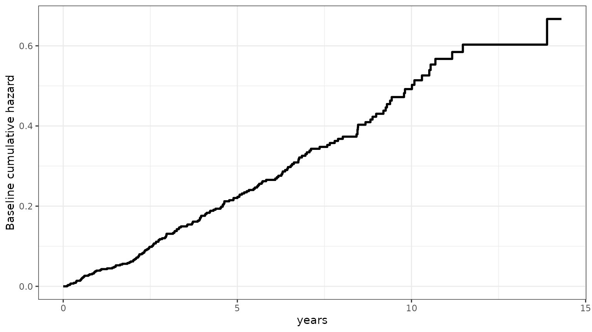
Longitudinal sub-models: plot(long_fit_all)
Standardized residuals against fitted values, one panel per biomarker. A trend in the red smoother, or a funnel shape, points to a misspecified mean or non-constant variance.
plot(long_fit_all)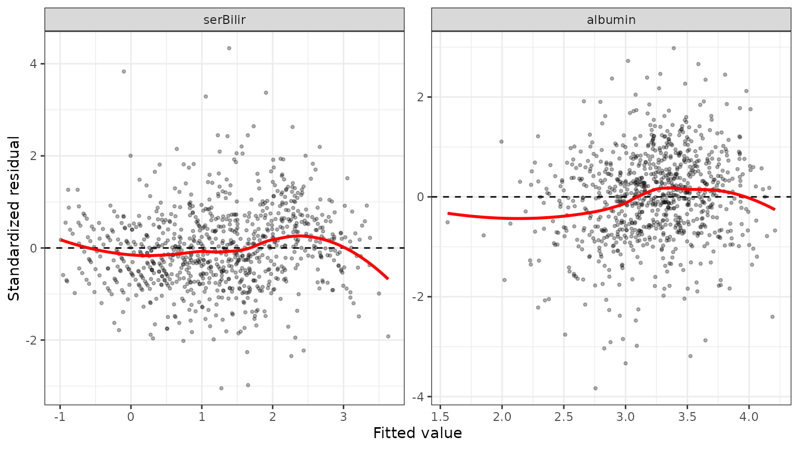
which = "qq" checks the residuals’ normality, and
which = "ranef" that of the predicted random effects.
plot(long_fit_all, which = "ranef")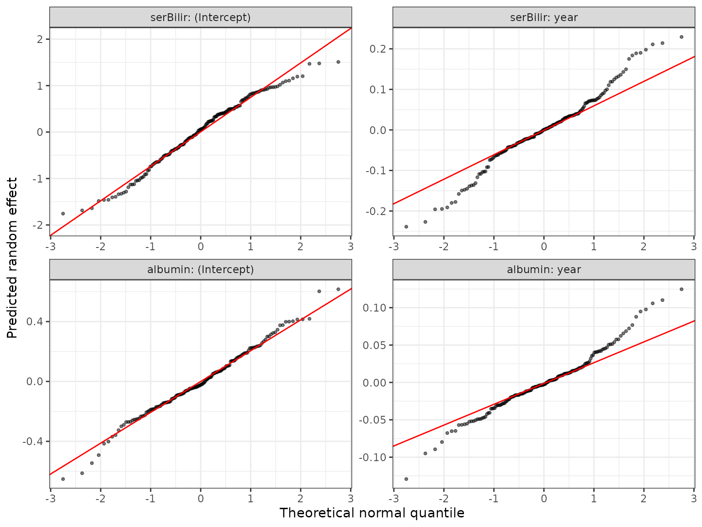
which = "corr" shows the correlations of the random
effects across biomarkers, estimated by the multivariate mixed model:
here, patients whose bilirubin rises faster tend to have albumin that
falls faster.
plot(long_fit_all, which = "corr")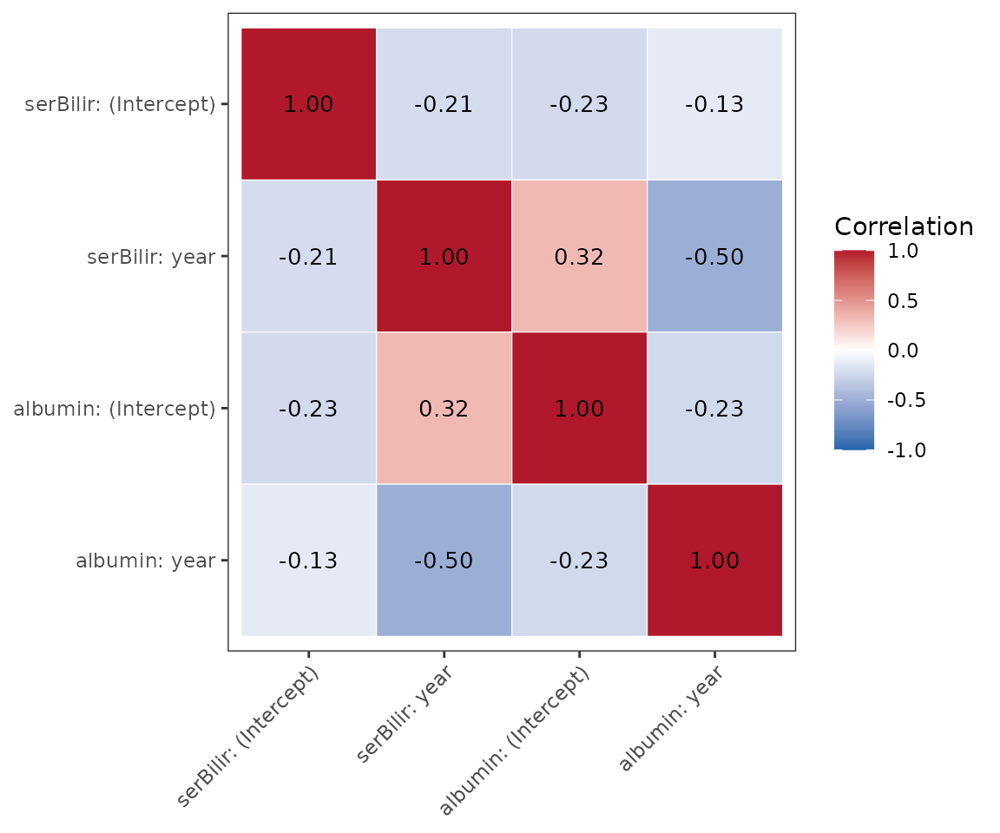
Predictions for one patient
Patient 2’s measurements up to year 5. In a real prediction, later measurements and the event time are not known yet.
patient <- pbc3[pbc3$id == 2 & pbc3$year <= 5, ]
patient$years <- NA
patient$status4 <- NARisk over the prediction horizon: predictPlot()
The landmark is fixed at year 5 and the prediction window grows. The plot shows the patient’s bilirubin history, the predicted risk of each event type, and the predicted future bilirubin.
predictPlot(list(patient, patient), long_fit_all, survival_fit_all,
prediction_time = 5, horizon = seq(0, 3, 0.5), time_variable = "year",
trans$survival_variable_all, trans$survival_trans_function,
bandcount1 = 10, bandcount2 = 20, bandcount3 = 50)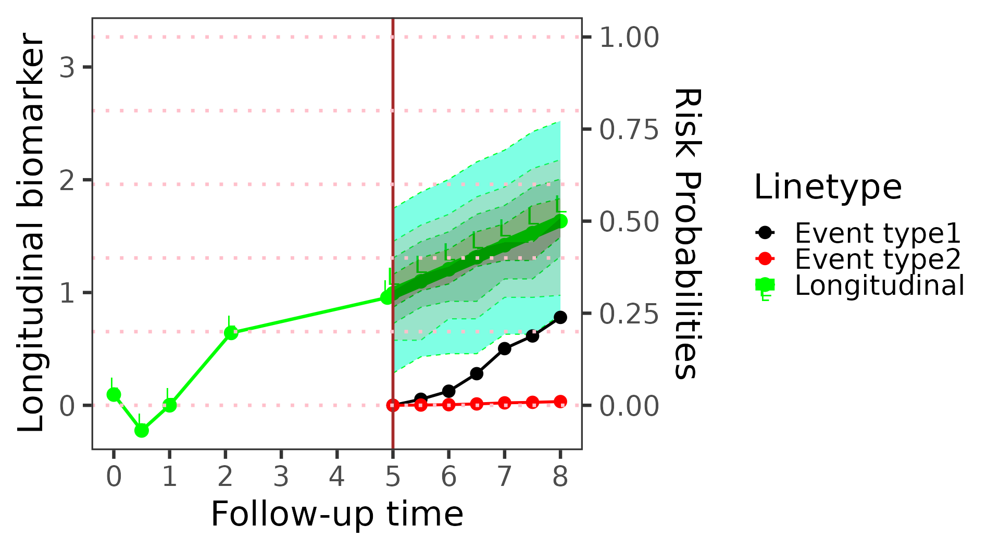
Risk as the landmark moves: riskPlot()
Here the window is fixed at one year and the landmark moves, so each point uses more of the patient’s history.
riskPlot(list(patient, patient), long_fit_all, survival_fit_all,
prediction_time = c(1, 2, 3, 4, 5), bio_i = 1, horizon = 1,
time_variable = "year", trans$survival_variable_all,
trans$survival_trans_function, bandcount1 = 10, bandcount2 = 20)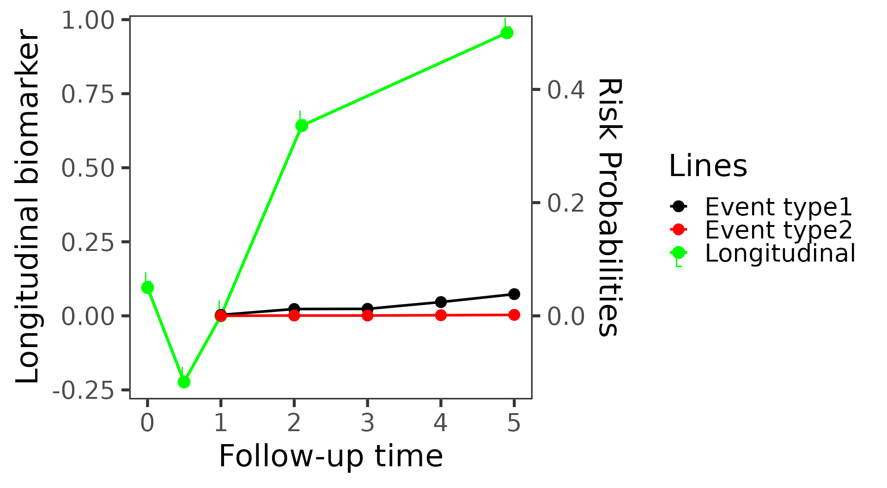
Predicted biomarker distribution:
plot(predictLongitudinal(...))
The predicted distribution of bilirubin one year after the landmark, for three patients, with the most likely value marked by a dashed line.
three <- pbc3[pbc3$id %in% c(2, 4, 5) & pbc3$year <= 3, ]
three$years <- NA
three$status4 <- NA
pred <- predictLongitudinal(list(three, three), long_fit_all, survival_fit_all,
prediction_time = 3, horizon = 1, time_variable = "year",
trans$survival_variable_all, trans$survival_trans_function,
bio_i = 1, bandcount2 = 20, bandcount3 = 50)
plot(pred)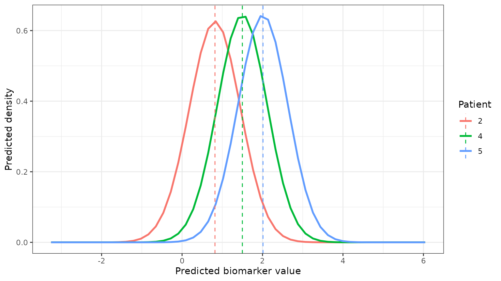
Simulated futures
simulateTrajectory() draws complete futures from the
fitted model: an event time, an event type and the biomarker values at
chosen times. Its plot() method draws them.
One patient’s futures
Patient 2’s history up to year 5, as above, with 500 futures over years 5 to 12.
sims <- simulateTrajectory(list(patient, patient), long_fit_all, survival_fit_all,
prediction_time = 5, times = seq(5, 12, 0.5), time_variable = "year",
trans$survival_variable_all, trans$survival_trans_function,
n_sim = 500, seed = 1)plot(sims) draws 30 of the simulated trajectories in
grey, the median and 90% interval of the draws at each time in blue, and
the measurements the draws are conditioned on as points. A draw stops at
its event, so at later times the band describes the draws still
event-free.
plot(sims)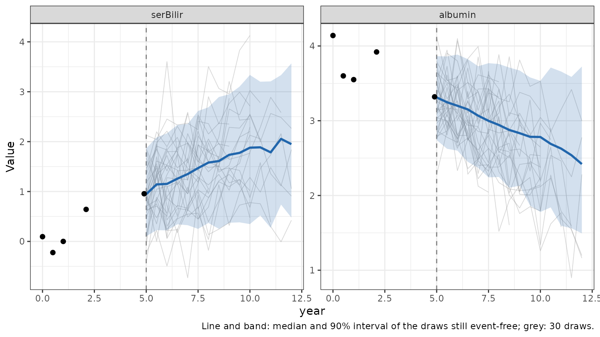
plot(sims, which = "event") draws the cumulative
incidence of each event type (status4 = 0 is death,
status4 = 1 transplantation) computed from the drawn event
times. Draws whose event comes after the last follow-up time (14.3
years) are counted as event-free through it.
plot(sims, which = "event")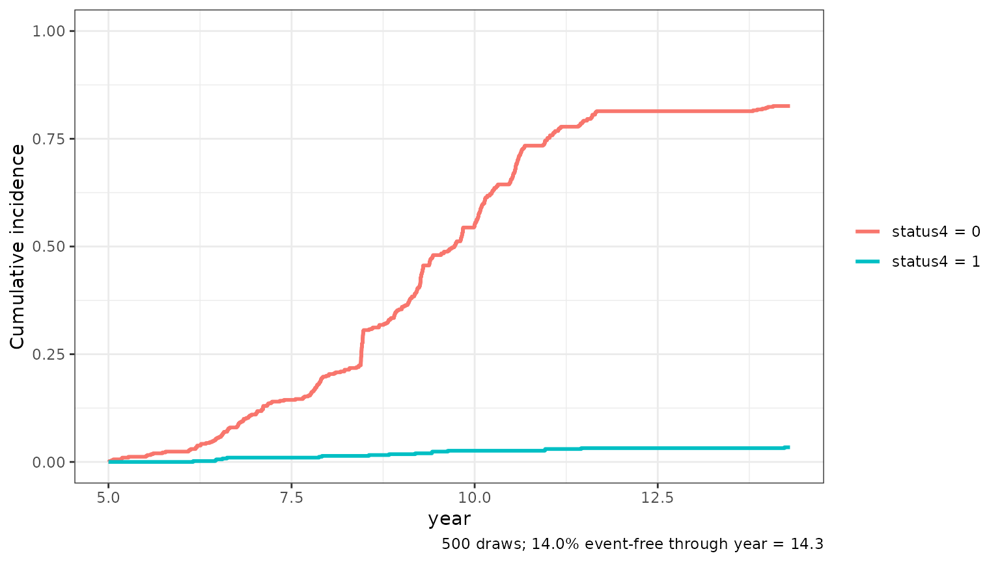
A synthetic cohort
A patient with no biomarker measurements is drawn from the model
given their baseline covariates alone. Here 200 synthetic patients, with
ages and sexes resampled from pbc3, get one future
each.
set.seed(1)
baseline <- pbc3[!duplicated(pbc3$id), c("age", "sex")]
cohort <- baseline[sample(nrow(baseline), 200, replace = TRUE), ]
cohort$id <- paste0("synthetic", seq_len(nrow(cohort)))
cohort$year <- 0
cohort$serBilir <- NA
cohort$albumin <- NA
synthetic <- simulateTrajectory(cohort, long_fit_all, survival_fit_all,
prediction_time = 0, times = 0:10, time_variable = "year",
trans$survival_variable_all, trans$survival_trans_function,
n_sim = 1, seed = 1)The plot now pools one draw from each of the 200 patients, so it
shows the spread of the cohort rather than one patient’s uncertainty.
Use id to plot a subset of the patients.
plot(synthetic)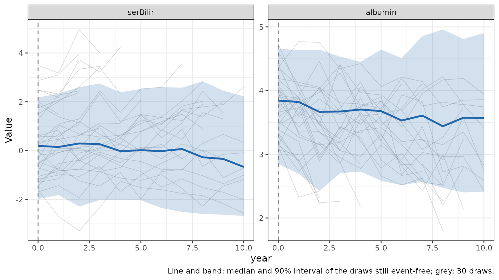
plot(synthetic, which = "event")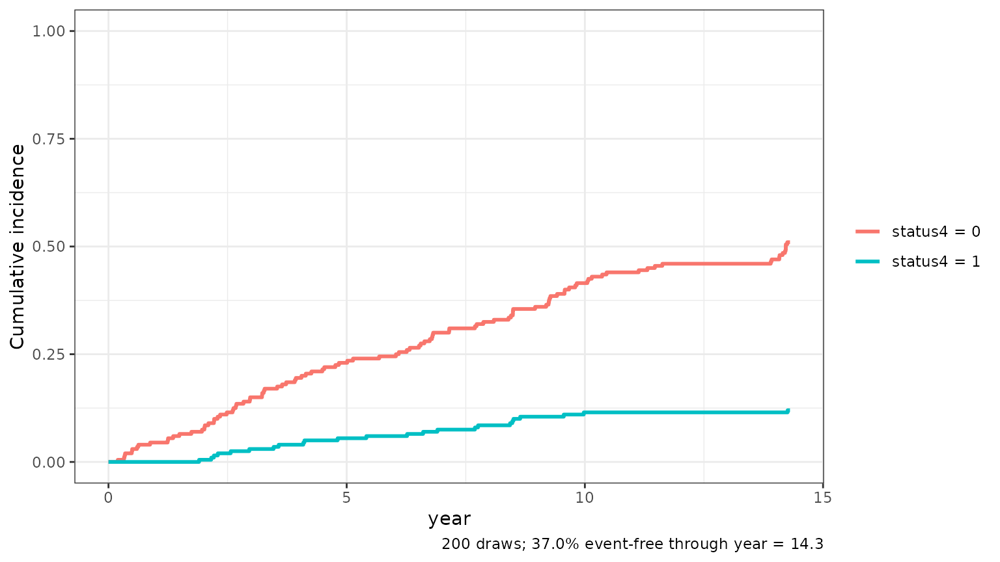
See ?simulateTrajectory for how the draws are made and
the assumptions behind them, such as how event times beyond the last
follow-up are handled.
Evaluating the predictions
Performance measured on the data the model was fit on is optimistic. Here we split the patients at random, fit the sub-models on two thirds of them, and evaluate on the remaining third.
set.seed(2026)
ids <- unique(pbc3$id)
train_ids <- sample(ids, round(2 / 3 * length(ids)))
train <- pbc3[pbc3$id %in% train_ids, ]
test <- pbc3[!pbc3$id %in% train_ids, ]
survival_train <- survivalSub(train[!duplicated(train$id), ],
Surv(years, status3) ~ age + sex,
status4 ~ years + age + sex)
long_train <- longitudinalSub(train[train$status3 == 1, ], long_sub_fixed, long_sub_random)Discrimination and accuracy: performancePlot()
At each landmark, every test patient still event-free is given a predicted risk of an event in the next two years, from their history so far. The time-dependent AUC measures how well these risks separate the patients who have the event from those who do not (0.5 is chance, 1 is perfect); the Brier score is the mean squared error of the risks (lower is better). Censoring is handled by inverse probability of censoring weighting.
performancePlot(test, long_train, survival_train,
prediction_time = c(1, 2, 3, 4, 5), horizon = 2, time_variable = "year",
trans$survival_variable_all, trans$survival_trans_function,
bandcount1 = 20, bandcount2 = 80)
#> AUC is undefined (no cases or no event-free subjects in the window) at some landmarks; those points are left out.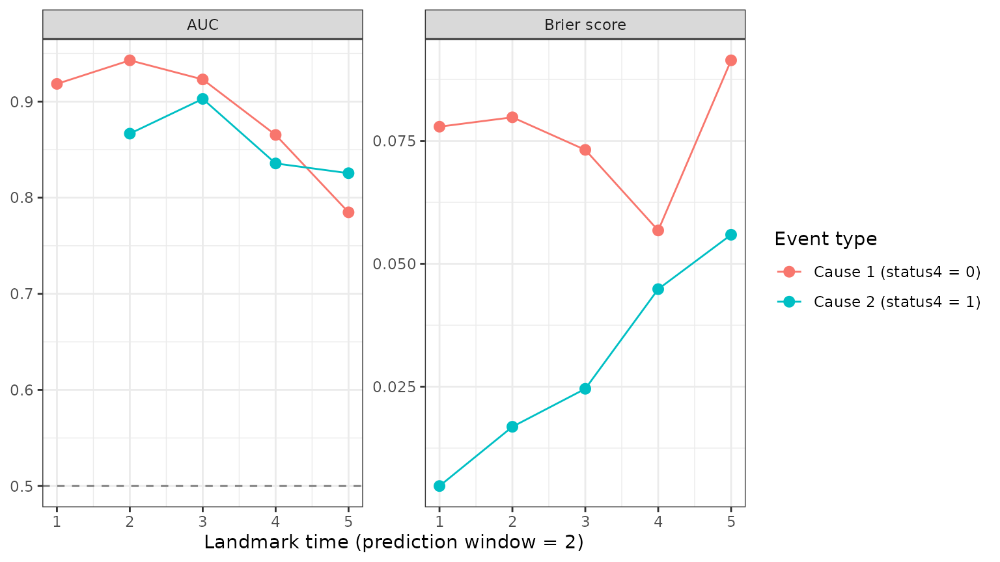
No test patient had a transplant in the two years after year 1, so
the transplant AUC is undefined there and that point is left out (the
message above). The returned plot’s data holds the numbers,
including how many patients were at risk and how many had each event at
each landmark.
Calibration: calibrationPlot()
The AUC only checks the ranking of the risks. Calibration checks the values: the test patients are grouped by predicted risk, and each group’s mean predicted risk is plotted against the risk actually observed in it. Points near the diagonal mean the predictions are accurate; below it, the model overestimates the risk, above it, it underestimates it.
calibrationPlot(test, long_train, survival_train,
prediction_time = c(2, 4), horizon = 2, time_variable = "year",
trans$survival_variable_all, trans$survival_trans_function,
n_groups = 4, bandcount1 = 20, bandcount2 = 80)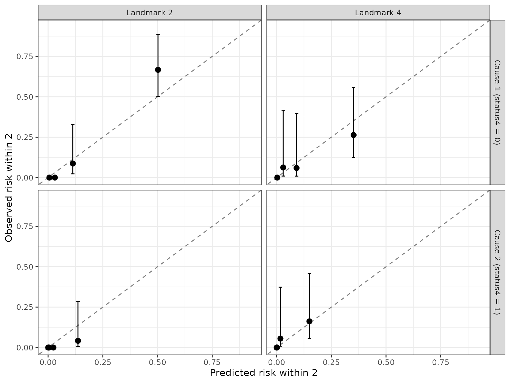
With only about a hundred test patients, and few transplants among them, the observed risks have wide confidence intervals; use more groups with larger data.